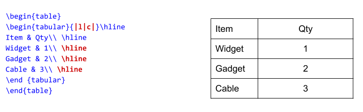

Tables#
Objective: Learn the basic commands to create and edit tables.
Basic tables can be created with a combination of the commands below and the use package: tabularx
Basic Commands |
Description |
|---|---|
|
column alignment |
|
ampersand separates columns |
|
double backslash begins new row |
|
horizontal line |
| |
vertical line |
Example: Creating a basic two column table#

Example: Adding vertical and horizontal lines#

Example: Centering and adding a caption#
Note the addition the \caption and \centering commands.

Exercise 1: Basic Table#
Use the tabularx package to create a simple table of the US Women’s Soccer Team’s 2019 World Cup Starting Roster.
Begin with a header row and two columns.
Your two column headers will be: Position and Last Name – Left align the text of the left column
Center the text of the right column
Add vertical and horizontal lines
Add a caption “2019 Team Roster” and center the table.
Note: Using the \caption{} command will add the phrase “Table 1” in front of caption.
Use package needed: tabularx
Commands needed:
& = column separator
\\ = begin new row
l, r, c = column alignment

Exercise 2: Multirow, Multicolumn Tables#
Create a table like the one below with columns spanning multiple rows or rows spanning multiple columns.

Packages needed:
\usepackage{booktabs}\usepackage{multirow}\usepackage{tablenotes}
Note
This is a good example to see how additional packages can contradict each other. You may need to alter vertical spacing to center the 2011 - 2015 - 2019 row.
This is the style that many journals require. It will give you the basic stepping stones to create charts like:

from: Acton, Riley K. “Community college program choices in the wake of local job losses.” Journal of Labor Economics 39.4 (2021): 1129-1154. https://doi.org/10.1086/712555
Questions?
Consult the answer key in the Overleaf Project to troubleshoot: https://www.overleaf.com/read/zhytgdvnpsqx
More information sources:
Roster: https://www.ussoccer.com/players
Tables info: https://en.wikibooks.org/wiki/LaTeX/Tables
Multicolumn/Multirow: https://en.wikibooks.org/wiki/LaTeX/Tables
Exercise 3: Challenge - Incorporating Bar Charts#
Let’s try to recreate this figure showing attendance at football events in 2013 from the Economist.

There are a number of ways to get started, but these are some of the steps you will need to take:
Make a table: Create a tabular enviroment
Columns: Add the appropriate number of columns
Data: Start adding data to your rows
Fonts: Can you change the default font to sanserif, can you make the header row bold?
Color: Can you introduce alternating row colors?
Spacing: Can you adjust column width and row height?
Extra: How can you include a bar for scale next to a numeric value?

Remember there are many ways to accomplish the same thing in LaTeX. Getting the results you want may take some trial and error.
Exercise 4: Converting a pandas table into LaTeX#
There are many ways to convert a table into LaTeX. One common scenario involves converting and exporting a Pandas Dataframe into a LaTeX formatted table.
This can be accomplished using the command:
print(df.to_latex())
First create your dataframe, then print using the above command. See below:
import pandas as pd
df = pd.DataFrame(dict(state=['California', 'Colorado'],
mountain=['Whitney', 'Elbert'],
flower=['poppy', 'columbine']))
print(df)
state mountain flower
0 California Whitney poppy
1 Colorado Elbert columbine
import pandas as pd
df = pd.DataFrame(dict(state=['California', 'Colorado'],
mountain=['Whitney', 'Elbert'],
flower=['poppy', 'columbine']))
print(df.to_latex())
\begin{tabular}{llll}
\toprule
{} & state & mountain & flower \\
\midrule
0 & California & Whitney & poppy \\
1 & Colorado & Elbert & columbine \\
\bottomrule
\end{tabular}
Information sources#
Soccer Roster: https://www.ussoccer.com/players
General Table Information: https://en.wikibooks.org/wiki/LaTeX/Tables
Multicolumn/Multirow: https://en.wikibooks.org/wiki/LaTeX/Tables#Defining_multiple_columns
Bar charts within tables: https://tex.stackexchange.com/questions/173042/is-it-possible-to-create-a-barchart-in-a-table
Pandas Conversion: https://pandas.pydata.org/docs/reference/api/pandas.DataFrame.to_latex.html